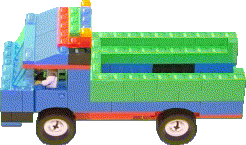

|
Os caminhões fazem novas casasDentro do Porta-Treco você encontrará uma grande pilha de caminhões. Um caminhão tem dentro uma equipe que está ansiosa para guiar e construir uma nova casa. Mas eles não construirão uma nova casa sem ter um robô que irá trabalhar na casa. E um robô não trabalhará a menos que receba uma caixa para trabalhar. Então você precisa colocar um robô (ou uma equipe de robôs) e uma caixa em um caminhão antes que eles o guiem. Eles localizarão o lote vazio mais próximo, construa uma casa ali, e coloque o robô dentro e lhe dê a caixa. Ele começará a trabalhar imediatamente. Um exemplo divertido de casas sendo construídas pode ser visto no exemplo "Explodindo Casas" ou você ainda pode experimentar o robô na página 6 da agenda de exemplos que está na página 6 de sua agenda principal. Dica. A equipe do caminhão construirá uma casa que se parece exatamente com aquela de onde o caminhão partiu. Você pode dizer a eles que tipo de casa deve ser construída colocando uma imagem da casa que você deseja no caminhão, antes de carregá-lo. Você pode encontrar imagens de casas na agenda de imagens na página 2 de sua agenda principal. Dica Avançada. A equipe do caminhão construirá uma nova casa em um lote vazio próximo. Se você quer dizer à equipe onde eles devem construir a casa, você pode colocar um endereço dentro do caminhão antes que o carregue. Você encontrará endereços na página 38 do sensor de sua agenda que está na página 4 de sua agenda principal. Dica Avançada. Se você colocar uma agenda em um caminhão, os robôs usarão aquela agenda em vez de uma cópia da agenda principal. A utilização de agendas como esta é o que os cientistas da computação chamam de um "módulo" ou "pacote".
|